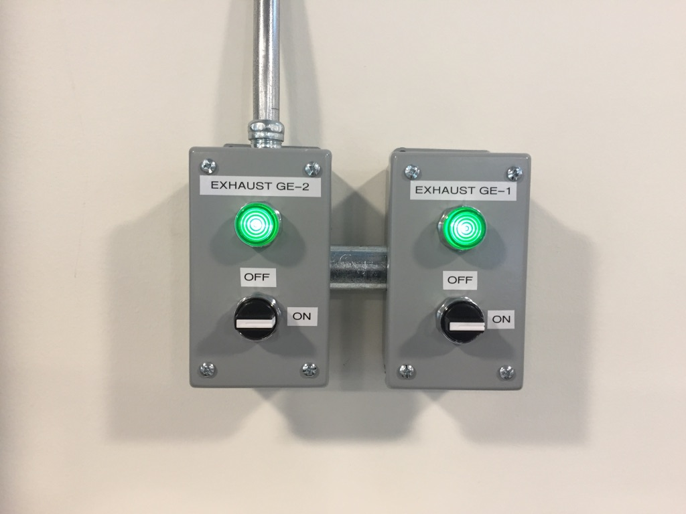
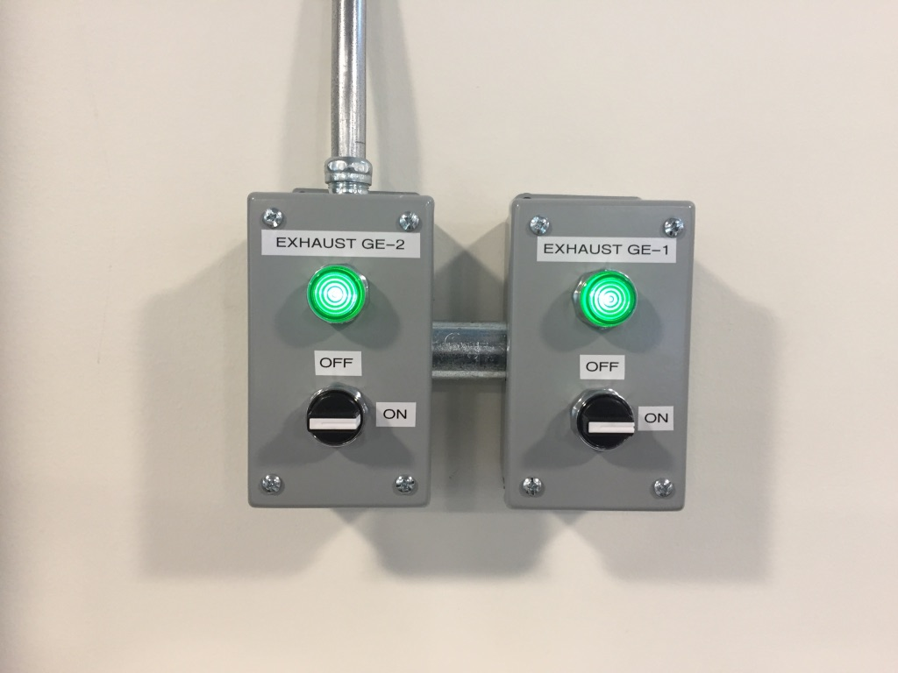

A7: Final Project Proposal
1. a concept, including concept sketches, intended use case, context
For the final project I want to create a decorative piece inspired by a mandala.
Inspiration came from numerous DIY mandala pages saved on pinterest.


 2. a breakdown of tasks (e.g. CAD modelling, 3d printing, casting, finishing)
3. a timeline with contingency plans
4. a Bill of Materials with sourcing schedule
I created a circle and square shape with 4 notches each.
Thickness of Notches: 2.1mm and 2.5mm
Circle Shape screenshot - Grasshopper
2. a breakdown of tasks (e.g. CAD modelling, 3d printing, casting, finishing)
3. a timeline with contingency plans
4. a Bill of Materials with sourcing schedule
I created a circle and square shape with 4 notches each.
Thickness of Notches: 2.1mm and 2.5mm
Circle Shape screenshot - Grasshopper
 Square Shape screenshot - Grasshopper
Square Shape screenshot - Grasshopper
 Rhino screenshot before exporting to Illustrator(different notch thickness)
Rhino screenshot before exporting to Illustrator(different notch thickness)

 Laser Cutter Setting at the MILL

Laser Cutter Setting at the MILL

 Laser Cutting in action:
Speed: 25%
Power: 100%
Laser Cutting in action:
Speed: 25%
Power: 100%
Laser cut pieces
 Final Result:
Final Result:


 Issues Faced:
1. I added a numeric slider for every notch and changed it manually every time I had to test with a different thickness(not very practical!). Next time would add formulas or use other ways to combine them.
2. I also faced difficulty with the conversion of scales from Rhino to Illustrator but after googling it became clear.
Source Files:
Grasshopper File
Rhino File
Thicker Cardboard Illustrator File
Thinner Cardboard Illustrator File
Issues Faced:
1. I added a numeric slider for every notch and changed it manually every time I had to test with a different thickness(not very practical!). Next time would add formulas or use other ways to combine them.
2. I also faced difficulty with the conversion of scales from Rhino to Illustrator but after googling it became clear.
Source Files:
Grasshopper File
Rhino File
Thicker Cardboard Illustrator File
Thinner Cardboard Illustrator File